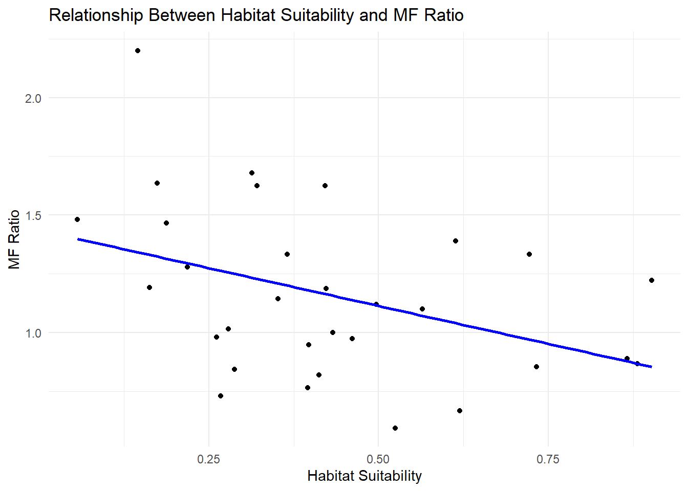
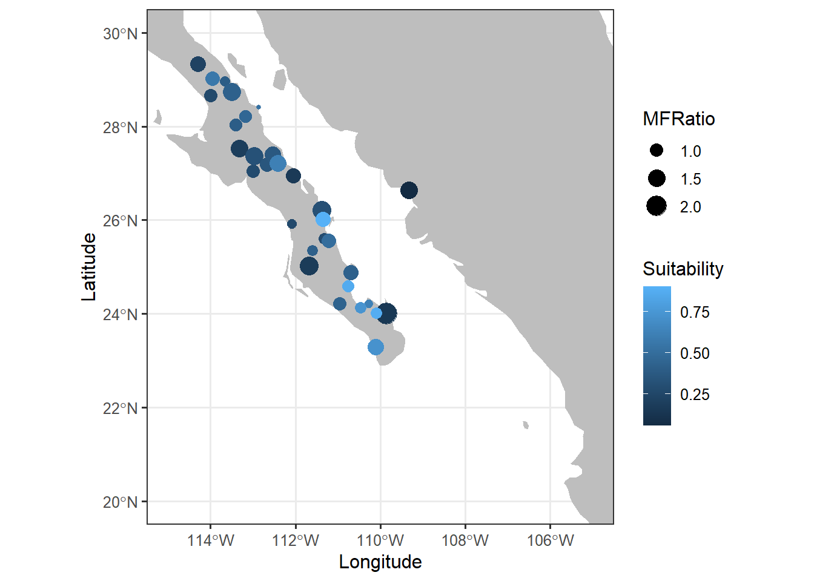
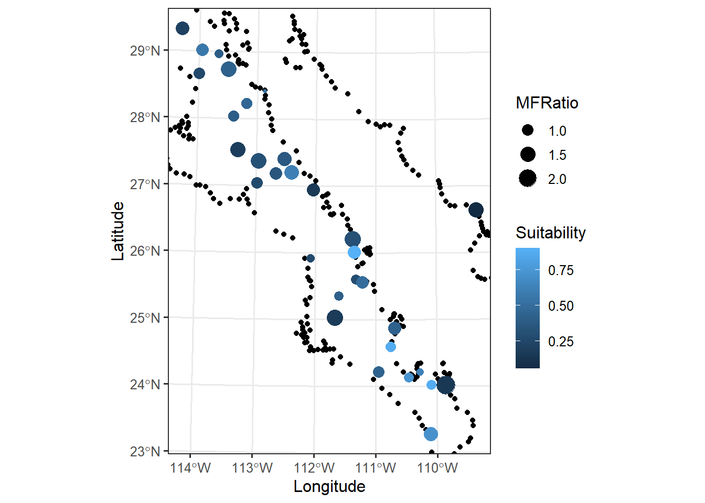

# needed_libraries <- c("sf",
# "maps",
# "units",
# "rgdal",
# "rgeos",
# "GGally",
# "raster",
# "mapproj",
# "leaflet",
# "rnaturalearth",
# "rnaturalearthdata"
# )
# # Determines which libraries you do not have
# # already installed.
# need_inst <- setdiff( needed_libraries,
# rownames( installed.packages()) )
# # Install the neccessary ones.
# if( length( need_inst ) ) {
# install.packages( need_inst, dependencies = TRUE )
# }In Class Activity

This homework is a bit quick but is designed to make sure that:
- To make sure everyone can get their computer up-to-date with the proper set of libraries so that we can work with geospatial data, and
- Give you some practice turning normal numerical data into geospatial coordinates and performing basic operations.
Spatial Libraries
The following code defines the set of necessary libraries for the next few weeks and then figures out which (potential) subset you need to install. It then installs them all in one call. It will not load them into your session, you’ll have to do that later in your code chunks.
The Data - Preprocessing
The data for this is some site-level data from the Sonoran Desert bark beetle. The URL is in the next chunk, and is currently being hosted on my class Github repository. Load it in.
url <- "https://raw.githubusercontent.com/dyerlab/ENVS-Lectures/master/data/Araptus_Disperal_Bias.csv"Interactive Map
Use the leaflet library and make an interactive map. If you can, add a label to each marker with the ID of the site. You can look at the provider tiles here and use on in the addProviderTiles() function.
There is a great tutorial here on how to customize the leaflet display. You may want to go look at it and see what you can use to make a better display.
# make a quick leaflet map here to get an idea of
library(leaflet)
library(readr)
library(tidyverse)── Attaching core tidyverse packages ──────────────────────── tidyverse 2.0.0 ──
✔ dplyr 1.1.4 ✔ purrr 1.0.2
✔ forcats 1.0.0 ✔ stringr 1.5.1
✔ ggplot2 3.5.1 ✔ tibble 3.2.1
✔ lubridate 1.9.3 ✔ tidyr 1.3.1
── Conflicts ────────────────────────────────────────── tidyverse_conflicts() ──
✖ dplyr::filter() masks stats::filter()
✖ dplyr::lag() masks stats::lag()
ℹ Use the conflicted package (<http://conflicted.r-lib.org/>) to force all conflicts to become errorsdata <- read_csv(url)Rows: 31 Columns: 9
── Column specification ────────────────────────────────────────────────────────
Delimiter: ","
chr (1): Site
dbl (8): Males, Females, Suitability, MFRatio, GenVarArapat, GenVarEuphli, L...
ℹ Use `spec()` to retrieve the full column specification for this data.
ℹ Specify the column types or set `show_col_types = FALSE` to quiet this message.head (data)# A tibble: 6 × 9
Site Males Females Suitability MFRatio GenVarArapat GenVarEuphli Latitude
<chr> <dbl> <dbl> <dbl> <dbl> <dbl> <dbl> <dbl>
1 32 40 27 0.0563 1.48 0.144 0.219 26.6
2 73 11 5 0.146 2.2 0.137 0.253 24.0
3 93 25 21 0.163 1.19 0.163 0.133 26.9
4 const 18 11 0.174 1.64 0.280 0.235 25.0
5 159 22 15 0.188 1.47 0.160 0.0809 27.5
6 88 23 18 0.219 1.28 0.266 0.176 29.3
# ℹ 1 more variable: Longitude <dbl>data |>
mutate( Label = paste( "<b>Site:", Site)) |>
leaflet() |>
addMarkers( ~Longitude, ~Latitude, popup = ~Label ) |>
addProviderTiles( "OpenTopoMap" )Converting to sf Objects
Convert the spatial data in the beetle data.frame into an sf object. Make sure you set the Coordinate Reference System to \(4326\).
# convert raw data to simple features in your data.frame
library(sf)Linking to GEOS 3.11.2, GDAL 3.8.2, PROJ 9.3.1; sf_use_s2() is TRUEdata |>
st_as_sf( coords=c("Longitude","Latitude"),
crs = 4326 ) -> data
head( data )Simple feature collection with 6 features and 7 fields
Geometry type: POINT
Dimension: XY
Bounding box: xmin: -114.2935 ymin: 24.00789 xmax: -109.327 ymax: 29.32541
Geodetic CRS: WGS 84
# A tibble: 6 × 8
Site Males Females Suitability MFRatio GenVarArapat GenVarEuphli
<chr> <dbl> <dbl> <dbl> <dbl> <dbl> <dbl>
1 32 40 27 0.0563 1.48 0.144 0.219
2 73 11 5 0.146 2.2 0.137 0.253
3 93 25 21 0.163 1.19 0.163 0.133
4 const 18 11 0.174 1.64 0.280 0.235
5 159 22 15 0.188 1.47 0.160 0.0809
6 88 23 18 0.219 1.28 0.266 0.176
# ℹ 1 more variable: geometry <POINT [°]>Questions
For these questions, you may want to look at the sf cheat sheet here to find the appropriate geospatial function.
- How far apart (in km) are the sites Constitución (
const) and San Francisquito (sfran)?
st_distance( data[4,], data[12,])Units: [m]
[,1]
[1,] 290090- Is there a correlation between habitat suitability and the ratio of males to female beetles sampled at each locale?
cor.response <- cor.test(data$Suitability, data$MFRatio)
r <- cor.response$estimate
p_value <- cor.response$p.value
cat("r =", r, "\n")r = -0.3997266 cat("P =", p_value, "\n")P = 0.02588509 library(ggplot2)
ggplot(data, aes(x = Suitability, y = MFRatio)) +
geom_point() +
geom_smooth(method = "lm", se = FALSE, color = "blue") +
labs(x = "Habitat Suitability", y = "MF Ratio",
title = "Relationship Between Habitat Suitability and MF Ratio") +
theme_minimal()`geom_smooth()` using formula = 'y ~ x'
- Make a plot using
ggplotof the data with suitability as the size of the points and the sex ratio as the fill color.
map_data("world") |>
filter( region == "Mexico") -> map
head( map ) long lat group order region subregion
1 -91.68369 18.67734 970 60731 Mexico Isla del Carmen
2 -91.79614 18.65420 970 60732 Mexico Isla del Carmen
3 -91.81612 18.67588 970 60733 Mexico Isla del Carmen
4 -91.58911 18.77803 970 60734 Mexico Isla del Carmen
5 -91.55029 18.77368 970 60735 Mexico Isla del Carmen
6 -91.53672 18.76001 970 60736 Mexico Isla del Carmenggplot() +
geom_polygon(aes(x = long, y = lat, group = group),
data = map,
fill = "grey") +
geom_sf(data = data,
aes(color = Suitability, size = MFRatio)) +
xlab("Longitude") +
ylab("Latitude") +
theme_bw(base_size = 12) +
coord_sf( xlim = c(-115, -105),
ylim = c(20, 30) )
- Reproject the data and plot it again using an EPSG code defined for Mexico UTM zone 12N (see epgs.io for projections).
Creating the plot using the st_transform() function
mapdf <- data |>
st_transform(6367)
map_data("world") |>
filter(region == "Mexico") -> map
newmap_sf <- st_as_sf(map, coords = c("long", "lat"), crs = 4326) #
newmap <- st_transform(newmap_sf, 6367)
ggplot() +
geom_sf(data = newmap,
color = "black") +
geom_sf(data = mapdf,
aes(color = Suitability, size = MFRatio)) +
xlab("Longitude") +
ylab("Latitude") +
theme_bw(base_size = 12) +
coord_sf(xlim = c(180128, 666529.7),
ylim = c(2575408, 3248545))
Creating the plot by resetting the original CRS value
data |>
st_as_sf( coords=c("Longitude","Latitude"),
crs = 6367 ) -> newdata
map_data("world") |>
filter( region == "Mexico") -> map
ggplot() +
geom_polygon(aes(x = long, y = lat, group = group),
data = map,
fill = "grey") +
geom_sf(data = newdata,
aes(color = Suitability, size = MFRatio)) +
xlab("Longitude") +
ylab("Latitude") +
theme_bw(base_size = 12) +
coord_sf( xlim = c(-115, -105),
ylim = c(20, 30) )